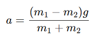

Скорость A: 0 м/с
Скорость B: 0 м/с
Ускорение A: 0 м/с²
Ускорение B: 0 м/с²
Еркін түсудің жоғары үдеуіне байланысты эксперименттік қондырғының жоғары биіктігі қажет. Атвудтың машинасы бұл қиындықты болдырмайды және ыңғайлы жылдамдыққа дейін баяулайды. Atwood's Ideal Machine келесі конструкцияға ие: осінде үйкеліс жоқ, үстел үстінде белгілі бір биіктікте бекітілген, созылмайтын және салмақсыз жіп лақтырылған салмақсыз блок арқылы оның ұшына массасы бар екі дене тартылады. байланған м1 және м2.
Денелердің массалары тең болғанда (м1 = м2) жүйе жүктердің орналасуына қарамастан, немқұрайлы тепе-теңдік күйінде болады.
Егер м1 ≠ м2, жүктер алға жылжи бастайды.
Этвуд машинасы жіптің бір ұшында шексіз шығырға ілінген екі массадан тұрады. Бұл жағдайда бір масса (m₁) көтеріледі, ал екіншісі (m₂) төмендейді. Жүйенің үдеуін мына формула арқылы есептеуге болады: 
g – ауырлық күшінің әсерінен үдеу. Бұл формула екі заттың массаларының айырмашылығын және ауырлық күшін ескереді. Этвуд машинасы тұрақты үдеумен денелердің қозғалысын зерттеуге көмектеседі.
Скорость A: 0 м/с
Скорость B: 0 м/с
Ускорение A: 0 м/с²
Ускорение B: 0 м/с²